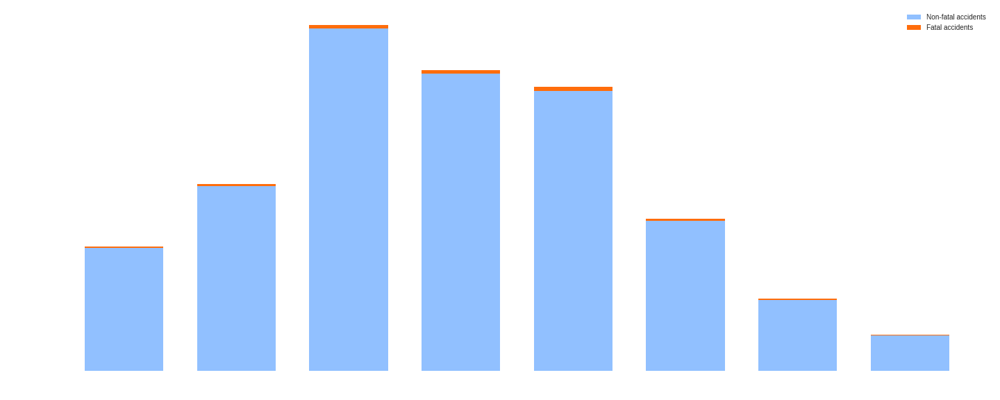

Statistics
Statistics
Basic exploration of the road accidents data
Correlation matrix
Very simple yet effective way of analyzing the data is calculating checking the correlations between different variables. This however has to be done carefully as correlation does not necessarily denote the causality and it's easy to make false inferences.

Accident grouped by age
These plots present the distribution of the accidents according to the drivers age. We decided to include both, normalized but also non-normalized data to indicate the need for performing normalization. If we look at the top plot, we notice that the infamous winners are drivers between 26 and 35 years old. This is however just an absolute value of the accidents caused by the drivers within this age range. At first it might be a bit surprising as most of the people in this age have already few-year driving experience. The second plot however makes it clear that this range 'won' only because the number of drivers within this range is high. It also shows clearly that the older the driver the less risky they are, which probably has to do with amount of driving experience. Moreover, this tendency is shown throught the entire domain.
Distribution of accident per hour
Another interesting aspect of the accidents is their time. Here, again we binned the accidents but this time based on the hour of accident. As can be seen on the plot below, there are two picks during the day, when there are more accidents occurring. The first one is at 8, when most of the people commute to work and school and the second one is between 15 and 17 when people finish classes and work and commute back home. This is also the time when most people die on the roads what is indicated by orange part of the bars. This however does not tell which time of the day is the safest and which the most dangerous as we do not have data that could be used for normalization - we don't know how many people travel at each hour.